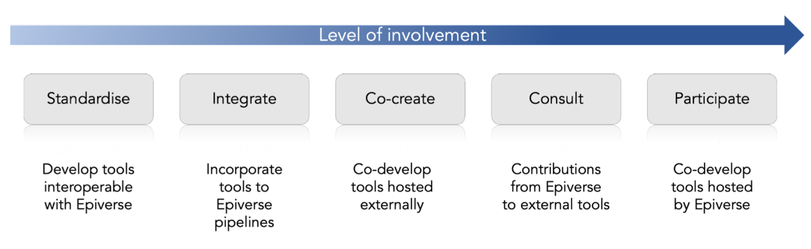

How to collaborate with Epiverse on software development?
Epiverse-TRACE aims to support the development of integrated, generalisable and scalable community-driven software for epidemic analytics, and contribute to a sustainable ecosystem of existing and new tools. There are several ways for external developers and research groups to join us in contributing to these aims. From less to more involvement, you can get involved by following these strategies:
- Standardise: by independently developing tools that are consistent with Epiverse principles and interoperable with Epiverse tools. See our blueprint for more.
- Consult us: you can seek help and contributions from Epiverse members to your existing packages/tools, which will also ensure their interoperability with Epiverse’s own packages, e.g. our team currently contributes to the development of GoDataR.
- In the first instance, we encourage you to post general questions on our discussion board so that other community members can contribute.
- For questions related to a specific package, please contact the maintainer (see the repositories of packages and their authors).
- For all other questions which fall outside the above categories, please contact Community Manager (anna.carnegie @ lshtm.ac.uk) in the first instance. You can also sign up to our mailing list, or follow us on Twitter at Epiverse_TRACE.
- Co-create: develop tools together with Epiverse members, that will then be hosted on independent websites/platforms, such as the WHO collaborative epidemiological parameters initiative.
- Integrate your tools: Epiverse data analytic pipelines aim to help users optimise their analysis of specific epidemiological problems, e.g. estimating the transmissibility of an infectious disease during an epidemic from line list data. Integration with such pipelines will allow your methods to reach a wider audience and benefit from upstream and downstream tools within Epiverse.
- Participate: get involved with the Epiverse team and contribute to the development of Epiverse’s existing tools, see our GitHub repository, with your contributions credited, e.g. by looking at the issues raised within Epiverse repositories, adding your own ideas or providing feedback by commenting on our discussion board.
¿Cómo colaborar en el desarrollo de software con Epiverse-TRACE?
El objetivo de Epiverse-TRACE es promover el desarrollo de software para análisis epidemiológico que sea generalizable, escalable y dirigido por la comunidad de usuarios, y que se integre con otras herramientas para crear un ecosistema sostenible. Existen diferentes vías que grupos de investigación y desarrolladores externos pueden utilizar para colaborar con Epiverse, ordenadas de menor a mayor nivel de contacto con el equipo:
- Estandarización: desarrollando herramientas independientemente que cumplan con los principios establecidos por Epiverse, y que sean interoperables con sus herramientas.
- Consulta: poniéndose en contacto con miembros del equipo de Epiverse, que pueden contribuir al desarrollo de herramientas externas. Esto garantiza que esas herramientas sean compatibles con paquetes desarrollados por Epiverse, por ejemplo, nuestro equipo actualmente colabora con el desarrollo de GoDataR.
- Co-desarrollo: desarrollando herramientas junto con miembros de Epiverse, que despues se quedarán en plataformas externas, por ejemplo, la iniciativa de la OMS para parámetros epidemiológicos.
- Integración: Epiverse proporciona sistemas para integrar herramientas, o pipelines, que ayudan a los usuarios a optimizar el análisis de problemas epidemiológicos concretos, por ejemplo, para estimar la transmisión de enfermedades. Incorporar tus herramientas a estos sistemas integrados contribuirá a su visibilidad en la comunidad de usuarios de Epiverse.
- Participación: contribuyendo al desarrollo de herramientas de Epiverse, en las que aparecerás como coautor en nuestra página web. Para ello, contribuye a issues abiertos en los repositorios de Epiverse, o añade sugerencias, ideas y feedback comentando en nuestro panel de discusión.
